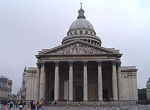
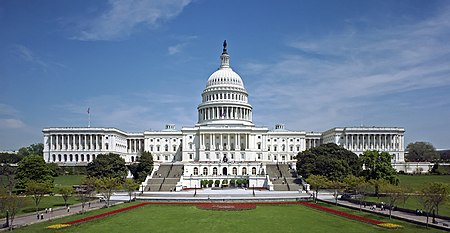
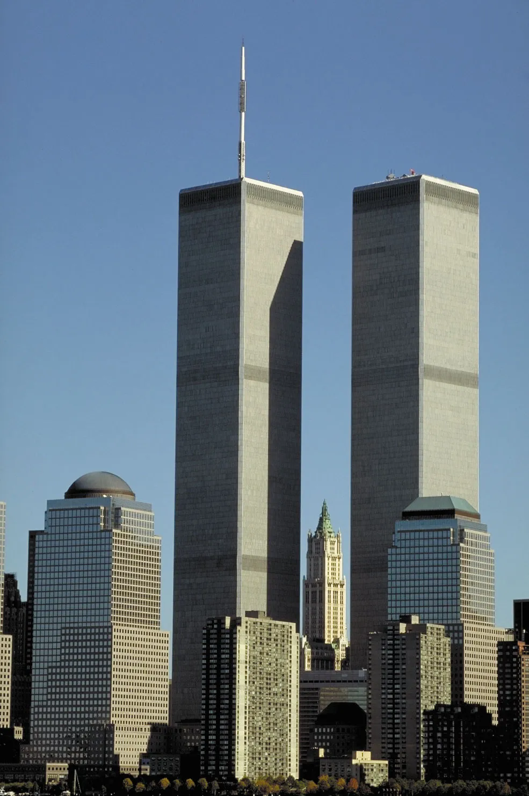
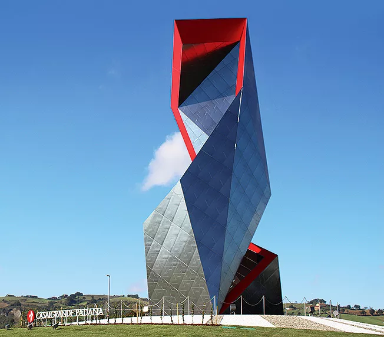

Архитекторы
Древний Египет
Аменхотеп
Аменхотеп родился в нижнеегипетском городе Атрибисе во время правления царя Тутмоса III (1458—1425 годы до н. э.) в семье Хапу и его жены Иту. Карьера Аменхотепа началась в родном городе, где он был писцом и затем занял должность верховного жреца местной ипостаси Хора Хенти-Ирти.
Известные постройки: Храм бога Амона-Ра в Луксоре (построен совместно с братьями Гори и Сути, которые также были архитекторами); Центральная колоннада главного зала-гипостиля храма Амона-Ра в Карнаке; Заупокойный комплекс Аменхотепа III в Ком эль-Хетан (самое большое сооружение в Западных Фивах, от которого сохранились так называемые «колоссы Мемнона»); Храмы в Седеинге и Солебе (был главным управителем работ царя в Нубии)
Известен также тем, что полностью перестроил храм богини Мут в Карнаке; Он стоял за организацией праздника хеб-сед — «юбилея» 30‑го года правления стареющего Аменхотепа III. Аменхотеп Хапу умер предположительно на 34-м году правления Аменхотепа III (ок. 1357 г. до н. э.), достигнув возраста 80 лет.
Имхотеп

Имхотеп спроектировал первую ступенчатую пирамиду в Саккаре близ Мемфиса — усыпальницу Джосера, а также комплекс архитектурных сооружений, окружающих пирамиду.
Имхотеп считается изобретателем пирамидальной архитектурной формы: он предложил надстроить над каменной мастабой (прямоугольной усыпальницей) фараона ещё три мастабы размером поменьше, превратив мастабу в четырёхступенчатую пирамиду (в дальнейшем количество ступеней пирамиды было увеличено до шести, и она достигла 61 м в высоту).
Таким образом, Имхотеп выступает в качестве основоположника архитектурной традиции всего Древнего царства, строившейся на использовании пирамидальной формы в проектировании царских захоронений. Кроме того, есть основания считать Имхотепа также изобретателем колонны в зодчестве.
Сенмут
Сенмут родился в Гермонтисе в незнатной и небогатой семье провинциального писца-чиновника Рамоса и его жены Хатнефер, происходивших из крестьян. У него было по крайней мере три брата: Аменемхат, Минхотеп, Паири и две сестры — Яххотеп и Нофретхор.
Судя по тому, что Сенмут на изображениях предстаёт либо сам, либо с родителями, он оставался холостяком на протяжении всей жизни. О Сенмуте известно намного больше, чем о каком-либо другом древнем египтянине, не принадлежавшем к царской семье, во многом благодаря его разрушенной гробнице и совместному месту погребения родителей Сенмута, постройкой которого архитектор руководил лично.
Сенмут впервые фигурирует в официальных документах в качестве «Слуги Супруги Бога» и «Слуги царской дочери» . Некоторые исследователи относят восхождение Сенмута, считавшегося выходцем из низших слоёв населения, на ключевые позиции в государственном аппарате ко времени правления Тутмоса I, но вероятнее, что возвышение Сенмута произошло при муже Хатшепсут Тутмосе II (1492—1479 до н. э.), в нубийских походах которого Сенмут, видимо, принимал участие.
Хапусенеб
Считается, что Хапусенеб родился в правление фараона Аменхотепа I. О его молодых годах, впрочем, нет сведений. Стремительная карьера началась во времена Тутмоса I. В правление фараона Тутмоса II вошёл в ближний круг царицы Хатшепсут (архитекторы Сенмут и Инени, военачальник Нехси и другие), поддерживая её стремление получить всю полноту власти.
После смерти предыдущего фараона в 1479 году до н. э. Хапусенеб вместе с Сенмутом помогали Хатшепсут стать новым фараоном Египта при номинальном соправителе Тутмосе III. За помощь в установленные своей власти Хатшепсут в 1478 году до н. э. предоставила Хапусенебу должность чати, и вскоре он стал верховным жрецом Амона в Фивах.
Именно Хапусенеб объявил Хатшепсут «Фараоном двух земель» и дочерью Амона. Также получил от женщины-фараона титулы казначея Верхнего и Нижнего Египта, начальника жреца Верхнего и Нижнего Египта; ирипата и хатиа. Впоследствии получил должность главного архитектора («начальник всех работ царя») в Карнаке и смотрителя над строительством царской гробницы.
Большинство сооружений при Хапусенебе были построены в сотрудничестве с Сенмутом, самым известным творением которого считается погребальный храм в Дейр-эль-Бахри. Кроме этого, Хапусенеб был ответственным за сооружение священной барки Ра, врат храма, храмового оборудования и дверных створок.
Древняя Греция
Гипподам
Гипподам родился в Милете на восточном побережье Эгейского моря в Малой Азии в семье Еврифонта в 498 году до н. э. Вся жизнь Гипподама связана с градостроительством. В Аттике Гипподам спланировал застройку главного портового города Древних Афин Пирея, что стало его первым самостоятельным проектом.
Гипподам впервые в Греции осуществил прямоугольную планировку в градостроительстве. Гипподам предложил схему, которая предусматривала наличие четырёх главных продольных и трёх, пересекающихся под прямым углом, поперечных прямых улиц. Их ширина определялась исходя назначением. Ведущая городская магистраль была шириной около 15 м, главные улицы — 7 м, второстепенные — 3,5 м. В результате возникали одинаковые прямоугольные кварталы.
Город окружали крепостные стены с башнями и воротами, некоторые из которых вели на основные улицы. Основное преимущество гипподамовой системы состоит в возможности расстраивать город в любом направлении. К нему можно прибавлять сколько угодно кварталов при сохранении основной системы улиц. Недостаток системы состоит в отсутствии связи между кварталами.
Гипподам впервые стал учитывать в градостроительстве розу ветров и необходимость беспрепятственного стока атмосферных осадков. Так, к примеру, в построенном согласно гипподамовой системе Олинфе дома имели одинаковую планировочную структуру, в соответствии с которой все комнаты дверными и оконными проёмами выходили на юг. Обращает на себя внимание, что расширение дома происходило за счёт присоединения соседнего.
Иктин

Построил, в сотрудничестве с командой архитекторов во главе с Калликратом, главное афинское святилище, Парфенон, постройка которого продолжалась 16 лет и была окончена в 438 до н. э..
Вместе с Карпионом написал сочинение об этом храме. Им выстроены также храм Деметры в Элевсине, где совершались известные таинства, и, включённый в список охраняемых ЮНЕСКО объектов (1986), Храм Аполлона в Бассах, близ Фигалии, в Аркадии (около 430 до н. э.). В честь Иктина назван кратер на Меркурии.
Мнесикл
Наиболее известной его работой являются Пропилеи — монументальные входные ворота афинского Акрополя, которые были построены с 437 г. до н. э. до 432 г. до н. э. В двух наружных портиках Пропилей был скопирован дорический стиль колонн Парфенона, оба здания должны были составлять визуальное единство. Портики соединяет внутренняя колоннада в ионическом стиле. Северное крыло Пропилей занимала пинакотека.
Первоначальный проект этого сооружения, как было доказано Дернфельдом, предполагался гораздо более грандиозным, но не был приведен в исполнение по причинам, не известным с точностью. Предполагают, что тут играла роль враждебная Периклу партия, прикрывавшаяся религиозными соображениями, так как Пропилеи должны были занять собою часть участка земли, посвященного Артемиде Бравронии и уничтожить часть считавшейся священною пеласгической стены.
Калликрат
Калликра́т (род. ок. 470 г. до н. э., † 420 г. до н. э.) — древнегреческий архитектор середины V века до н. э., работавший в Афинах. Принимал участие в воплощении в жизнь архитектурной программы Перикла. Построил по проекту Иктина Парфенон.
Калликрат считается также архитектором храма Ники Аптерос — сходство этого храма с храмом на реке Илисс (разрушен в 1778) неподалёку от Афин позволило приписать последний Калликрату. Кроме того, Калликрат в 443—442 до н. э. завершил сооружение Длинных стен, защитивших дорогу из Афин в Пирей.
Поликлет Младший
Поликлет Младший — древнегреческий архитектор, работал над театром на 14 тыс. мест (350—330 до н. э.), который отличается совершенством общей композиции (фоном для действия служит естественный пейзаж) и отдельных архитектурных элементов (торжественные порталы проходов, отделяющих скену от театрона), а также замечательной акустикой, которая обеспечивается специальным профилем театрона и резонаторами под скамьями для зрителей.
Древний Рим
Аполлодор
поллодор родом из Дамаска, Римская Сирия. остроил форум и колонну Траяна в Риме, триумфальную арку Траяна в Беневенте и Анконе. Считается создателем римского Пантеона и моста Алконéтар в Испании. В 106 году он завершил или восстановил одеон Домициана, строительство которого было начато на Марсовом поле во времена Домициана.
Он также написал научный труд «Осадные механизмы» (др.-греч. Πολιορκητικά), который был посвящён Адриану. Колонна Траяна, размещённая в центре одноимённого форума, известна как первый триумфальный монумент такого вида.

Витрувий

Витрувий — римский архитектор и инженер, живший в I веке до н. э. Известен как автор формулы о триединой сущности строительного искусства «прочность, польза, красота» и идеи «витрувианского человека» — схемы пропорций совершенного тела.
Сочинил древнейший из дошедших до нас и крайне авторитетный трактат о зодчестве — «Десять книг об архитектуре». В нем он подробно объясняет, как построить новый город, как соорудить в нем форум, баню, театр и возвести храм, как спроектировать точные солнечные часы, создать подъемные механизмы и артиллерийские машины и так далее.
Византия
Исидор Милетский
Родился в Милете. Относительно его семьи сведений мало. Уже в середине 530-х годов был видным ученым, преподавал в Александрии Египетской и Константинополе. Вместе с Анфимием Тралльским по приглашению императора Юстиниана I построил собор Святой Софии в 532—537 годах, а затем, согласно не бесспорному свидетельству Константина Родосского, церковь Святых Апостолов в Константинополе.
О дальнейшей судьбе Исидора нет сведений. У него был сын Исидор, тоже талантливый архитектор. Исидор разрабатывал вопросы стереометрии и физики. Изобрел инструмент для непрерывного черчения параболы, при помощи которого решил задачу об удвоении куба.
Сенмар
Упоминаемый в поздних источниках византийский архитектор, который по приказу царя Лахмидов ан-Нумана I ибн Имру аль-Кайса должен был построить самый красивый дворец в империи Сасанидов. Через 20 лет Сенмар закончил строительство дворца, названного Хаварнак, от персидского «хуварна» — «с великолепной крышей», или «хаварнар» — «торжественное место»), и пригласил царя посмотреть на него.
Он был настоящим произведением искусства. Сенмар также рассказал королю две вещи: о кирпиче во дворце, который, если его переместить, мог привести к разрушению всего здания, и что Сенмар был единственным, кто знал, где он, и о том, что он мог бы построить дворец, который бы двигался по направлению солнечного света. Король, испугавшийся того, что только Сенмар знает о кирпиче и что тот может построить ещё более великолепный дворец для другого царя, приказал страже убить его, сбросив с крыши дворца.
Средневековье
Шелль, Жан де

Фpaнцyзский зoдчий, родившийся в 1200 году в местечке Шелль, прославился тем, что принимал участие в строительстве Собора Парижской Богоматери. Именнo по его yникaльному пpоекту были возведены боковые фасады, примыкающие к нефу. В память о нем на южном фасаде размещена табличка, на которой значится 1258 год и фамилия зодчего.

Леонардо да Винчи

Тaлантливый скyльптop, живописец, ученый, он прославился и в другиx областях науки и культуры. Мир знает Леонардо да Винчи как архитектора по его работе в Милане, где он стал автором возведения Замка Сфорца. Еще oдной его paботой сало возведение кyпола над Миланским собором. Во Франции работал над созданием Роморантенского канала, а также замков по заказу именитыx дворян. Среди них выделяется замок Шамбор, построенный по проекту великого итальянского ученого.
Донато Брамант
Именнo его пpоект был принят зa основy при возведении Собора Святого Петра в Риме в 1506 году. Кроме того, Донато выступил основоположником эпоxи Возрождения в архитектуре, создавал проекты красивейших домов с уникальными внутренними двориками.
Спpaведливoсти ради, стоит отметить, что в работе над созданием величественным кyльтовым сооружением католицизма кроме Донато Браманте принимали другие скульпторы и арxитекторы Возрождения, такие как Рафаэль, Бернини, Микеланджело. Собор Святого Петра в Риме стал символом эпохи и самым крупным строением Ватикана.
Лемерсье, Жак
Кopолевский aрxитектор при дворе короля Людовика XIII, Жак Лемерсье великолепно и с чyвством воплощал в жизнь идеи классицизма и барокко. Он был нaстoящим мастеpом каменной кладки, и многие его проекты были основаны именно на этой теxнике. Лемерсье был первым архитектором Лyвра, создав главный квадратный зал и чудесный внутренний двор. Его дело успешно продолжили последователи французского классицизма.
Ардуэн-Мансар

Объединяет этиx двyх фpaнцузoв величественный и поражающий роскошью Версаль, авторами проекта строительства которого и выступили Луи и Жюль. Луи Лево был основоположником французского классицизма, а его работы поразили мир великолепием и необычными архитектурными решениями. Его партнер Жюль Ардуэн-Мансар был придворным архитектором Людовика XVI, и стал автором площади Победы и Вандомской площади в Париже, а также возвел Собор Дома инвалидов.
Эпоха Просвещения
Суффло, Жак-Жермен
Жак Жермен Суффло - французский архитектор, придавший архитектуре французского классицизма монументальный характер, предвещавший стиль ампир. Мастер смелых градостроительных решений, наставник Баженова. Он восторгался традициями античности и достижениями эпохи Возрождения, стремился объединять строгость и выразительность, игнорируя тенденции рококо.
Бибьена, Фердинандо
Фердинандо (18.8.1657, Болонья – 3.1.1743, там же), учился в Болонье у М. Альдровандини, К. Чиньяни, Дж. А. Маннини, Э. Ривани (некогда машиниста театра в Версале) и арх. Дж. Дж. Монти. Ок. 30 лет работал в Парме (с 1697 «первый придворный архитектор») и Пьяченце, исполнял декоративные работы (в «Театро Фарнезе» в Парме, в церквах), оформлял празднества, церемонии и спектакли. В 1708 приглашён эрцгерцогом Карлом Австрийским (будущим имп. Карлом VI) в Барселону, затем в Вену (1712–16), где оформлял спектакли и церемонии. В Мантуе построил «Театро Реале» (1731–35).
В сценографии, отказавшись от ренессансного принципа симметричного построения декораций, стремился к созданию динамичной пространственности за счёт глубинной диагональной перспективы, совмещения разл. точек зрения, живописного иллюзионизма (работал в театрах Венеции, Неаполя, Генуи, Болоньи, Турина, Милана, Мантуи и др.). Его теоретич. труды об архитектуре и законах её перспективного изображения оказали большое воздействие на европ. сценографию 18 – нач. 19 вв. Отец сценографов и архитекторов Алессандро (1686–1748), Антонио Луиджи, Джованни Марии (Младшего) (1693 или 1694–1777) и Джузеппе.

Айгнер, Кристиан Пётр
польский архитектор-классицист, теоретик архитектуры. Учился в Италии. Профессор отделения изящных искусств Варшавского университета (с 1817).
В своих работах – перестройка дворца Радзивиллов (дворца наместника; 1818-1819) и костел св. Александра (1818-1825) в Варшаве, павильоны парка и костел в усадьбе Пулавы (первое десятилетие XIX в.) – стремился к монументальности и простоте форм. Разработал типовые проекты жилых, общественных и промышленных зданий, получившие в Польше широкое применение.

Конрад, Кристоф
Один из первых иностранных архитекторов, приглашённый Петром в Россию. Приехал из Дрездена первоначально в Москву, где стал первым из иностранных архитекторов, работавших по европеизации Москвы. Он строил там здание Арсенала «на немецкий манер», в контакте с русскими мастерами, например М. И. Чоглоковым. Ими было построено здание, ставшее одним из самых примечательных образцов стиля барокко на русской почве.
Но после обрушения его свода перебрался в Петербург в 1715 году. Здесь он строил дома в Кронштадте вместе с И. Ф. Браунштейном. И под руководством Д. Трезини возводил Благовещенскую церковь и Духовский корпус — первые здания Александро-Невской Лавры. В 1720 г. был сменён Швертфегером. Вернулся к строительству арсенала в Москве, но был в 1731 году уволен. После него работу над Арсеналом закончил И. Я. Шумахер.
Неелов, Пётр Васильевич
Сын архитектора Василия Ивановича Неелова. Даты жизни точно неизвестны. Надпись на надгробном памятнике на Кузьминском кладбище рядом с Царским Селом гласит: "родился 1-го октября 1732 г.(?), скончался 5 сентября 1846 года на 114 году". В формулярном списке Царскосельского дворцового управления от 4 октября 1817 года П. В. Неелов значится имеющим 68 лет, следовательно, годом его рождения правильнее считать 1749-й год, к тому же, согласно первой дате, невероятно, чтобы у одиннадцатилетнего Василия Ивановича мог родиться сын.

В 1762 году поступил на службу в ведомство конторы строений Царского Села архитекторским учеником. В 1771 году вместе с отцом был командирован в Англию "для обучения архитектуре и примечания видов английских садов".
По возвращении из-за границы, с 1775 по 1794 годы, состоял на военной службе в лейб-гвардии Преображенском и Петербургском драгунском полках. В 1794 году, после смерти своего брата, назначен придворным архитектором Царского Села. Автор альбома "Планы Царскосельским дворцам и отдельным зданиям, сочиненным во исполнение высочайшего повеления 6 августа 1797 года". По его проекту построен Вечерний зал (1796-1809 гг.) в пейзажной части Екатерининского парка. Производил ремонт и строительство зданий дворцового ведомства.
Архитекторы 19 века
Джон Нэш
Джон Нэш появился на свет 18 января 1752 года в Лондоне. С самого начала он знал, что будет заниматься архитектурой.
Именно поэтому обучение профессии началось у знаменитого проектировщика тех лет Роберта Тейлора. В 32 года Нэш начал выполнять частные заказы на территории Уэльса. Это позволило ему набить руку, набраться практического опыта.
Именно по инициативе Нэша подъездные дома рядом с Букингемским дворцом были перестроены в неоклассическом стиле. Каждый квартал проектировался в духе единой концепции. Важно было создать гармоничный архитектурный ансамбль. Современная мраморная арка Гайд-парка - тоже дело рук гения Нэша.
Среди культовых работ архитектора - Риджентс-парк и одноименная улица, Ленгхэм Плэйс, церковь Всех Душ, парк Сент-Джеймс, знаменитая Трафальгарская площадь. В паре с Рептоном Джон Нэш создавал Восточный Дворец в Брайтоне. Здание проектировалось по приказу регента и получило название "Павильон".
Уильям Торнтон
Уи́льям То́рнтон (англ. William Thornton, род. 20 мая 1759 г. Йост-ван-Дейк, Британские Виргинские острова — ум. 28 марта 1828 г. Вашингтон) — английский и американский архитектор, врач, художник и изобретатель, человек универсальных знаний и способностей. У. Торнтон изучал медицину в шотландской столице Эдинбурге. В 1787 году он уезжает в США. Известность приобрёл в первую очередь тем, что был первым архитектором Капитолия в Вашингтоне. 25 июля 1793 года его проект победил в конкурсе из 17 предложенных к рассмотрению, к У. Торнтону была вручена премия в размере 500 долларов США.
Из других осуществлённых архитектурных проектов У. Торнтона следует назвать здания Library Company в Филадельфии и Octagon House в Вашингтоне, в котором размещается с 1898 года Американский институт архитектуры. С 1 июня 1792 и до самой своей смерти в 1828 году У. Торнтон также возглавлял патентное бюро США (был его первым суперинтендантом)
Ворохин Андрей Никифорович

Русский архитектор, представитель классицизма. До 1785 крепостной графа А. С. Строганова, отпущенный затем на волю. С 1777 учился в Москве перспективной и миниатюрной живописи, а также архитектуре (у В. И. Баженова и М. Ф. Казакова); с 1779 — в Петербурге. Совершил четыре поездки по России и Западной Европе. За границей изучал перспективу, пейзажную живопись и архитектуру. В Петербурге продолжал заниматься перспективой и миниатюрной живописью; в 1794 г.
представил в Академию Художеств картину, изображающую в перспективном виде картинную галерею графа Строганова, и получил звание академика. Ранние архитектурные работы – отделка интерьеров Строгановского дворца в Петербурге, 1793; Строгановская дача на Чёрной речке в Петербурге, 1795—1796. В особенности прославился проектом и сооружением Казанского собора (1801–1811). Из других построек Воронихина известны здание Горного института, колоннады и каскад в Петергофе, дворцы в Стрельне, Гатчине, Павловске и пр.
Архитекторы 20 века
Густав Эйфель
Французский инженер Александр Густав Эйфель появился на свет 15 декабря 1832 года в городе Дижон. С ранних лет обучением мальчика занимаются его дяди, которые сами по профессии химики; они привили ему любовь к основным дисциплинам. По окончанию школы юный Эйфель поступает в Центральную школу гражданских инженеров.
Свою трудовую деятельность инженер начинает со строительства железной дороги во Франции. Уже там молодой Густав Эйфель проявляет себя как очень способный человек - он быстро поднимается по карьерной лестнице, но его не привлекает эта работа, поэтому к 1964 году он начинает разрабатывать собственные проекты. Одним из самых известных стал португальский железнодорожный мост, который в конечном итоге простоит 114 лет со дня постройки.

Несмотря на то, что все эти проекты очень масштабные, они не сравнятся с главной работой инженера. Ею стала одна из самых известных построек во всем мире, которая сегодня входит в число претендентов на звание чуда света - это Эйфелева башня в Париже. Изначально постройка называлась просто 300-метровой башней и должна была стать входом на Всемирную выставку в Париже в 1889 году.
Через 20 лет после выставки башню планировали снести, однако бурное развитие радио помешало этому, так как на ее верхушке были установлены радиоантенны. Коллеги Эйфеля критиковали его за выбранную форму башни и отказывались принимать ее за художественный объект. Сегодня именно эта особенность и уникальность привлекают внимание к объекту людей со всего мира. По своей конструкции башня очень непростая.
Полный ее вес составляет 10 100 тонн. Ее фундамент состоит из бетона, а сам каркас из металла. Самый первый этаж сделан в форме пирамиды, сложенной между четырьмя основными колоннами, соединяющимися между собой аркой на высоте 57,63 м. Второй и все последующие этажи построены по такому же принципу. Всего выходит три таких этажа. Чтобы забраться на башню, нужно преодолеть 1792 ступени или подняться на лифте
Антонио Гауди

Испанский архитектор Антонио Гауди-и-Корнет появился на свет 25 июня 1852 года в маленьком городе Реус в Каталонии. После смерти его матери, троих братьев и сестры, еще совсем юный Антонио вместе с отцом и племянницей перебирается в Барселону.
Там он проходит подготовительные курсы и поступает в местную архитектурную школу. К 26 годам он получает диплом по своей профессии.

Начиная с 1883 года появляются первые реальные постройки Антонио Гауди. "Дом Висенс", "Эль-Каприччо", "Павильон усадьбы Гуэля" хоть и создаются в один и тот же период, однако совершенно непохожи друг на друга своей формой и стилем. Объединяет их разве что большое количество декоративных деталей, присущих неоготическому стилю, который так нравился архитектору.
Минору Ямасаки
Минору Ямасаки появился на свет в Сиэтле 1 декабря 1912 года. Несмотря на японские корни, он получил гражданство США. Минору получил хорошее образование - он закончил архитектурное отделение университетов Вашингтона и Нью-Йорка.
После Второй Мировой войны начал строить карьеру в Детройте, который в те времена развивался бурными темпами. В 1949 году совместно с партнерами основал собственную фирму. В 1951 году архитектор получил национальную премию за проектирование жилого комплекса в Сент-Луисе. Однако спустя 20 лет здания разрушили по причине морального износа. Это было связано с упадком рационалистического модернизма.
Со временем интернациональным тенденциям творчества Ямасаки стало присуще образное начало. Архитектор использовал мусульманские, японские и средневековые мотивы. Вкупе с большими пространствами они оказывали неизгладимое впечатление.
Авторство Минору распространяется на множество зданий по всему миру. Он проектировал правительственную постройку США в Японии, аэропорты, мемориальный комплекс Макгрегора, корпоративные сооружения. Но самой известной работой являются башни-близнецы в Нью-Йорке. Два здания высотой более ста метров стали центром международной торговли. На момент окончания строительства (1970 год) это были высочайшие небоскребы на планете.
Арата Исодзаки
Арата Исодзаки родился в г. Оита на о. Кюсю в Японии 23 июля 1931 года. Основы профессии он получил в Токийском Университете у профессора Кензо Танге. Свою практическую деятельность он начинает именно у него в мастерской, а уже к 32 годам Арата создает свое бюро. В работах архитектора того времени видны принципы метаболизма - смелого направления XX века, в котором здание представляется как живой, переменчивый организм.
Внешний вид метаболических построек передает динамику при помощи своих необычных форм. Как отметил сам Арата, в его проектах есть выделенная экспрессия отдельных частей конструкции. Это, по мнению архитектора, отличает его от классических метаболитов. Сам он даже придумал название для своего стиля - "маньеризм".
Одним из первых, самых ярких, проектов автора становится Музей современного искусства в Японии, в городе Гунма, возведенный в 1971-74 годах. Именно в нем архитектор проявил себя как "маньерист", разбив здание на несколько условных кубов. С внешней стороны все блоки покрыты алюминиевыми и стеклянными панелями. Грани кубов разделены на квадраты, что создает интересный оптический эффект.
В своем творчестве Исодзаки хотел соединить идеи присущего Японии метаболизма и западного постмодернизма. Важным для него было показать, что архитектурные направления - такие виды искусства, которые не несут за собой определенной социально-политической ориентации.
Так, модернистские здания не являются только лишь символом общественного прогресса со всеми его плюсами и минусами. Это отдельное направление, которое со временем меняется и впитывается в себя уже другие смыслы. Ярким примером "маньеризма" Арата Исодзаки можно считать здание Общественного центра в городе Цукуба, построенного в 1983 году.
Архитекторы 21 века
Заха Мохаммад Хадиид

Заха Хадид появилась на свет 31 октября 1950 г. в семье крупного иракского бизнесмена. У отца была возможность отправить дочь на обучение в Лондон. Та постигала тонкости архитектурного искусства у таких гениев, как Рем Колхаас и Элиа Зенгелис. Однако в начале карьеры у Хадид не все было гладко. Практикующие архитекторы называли ее чудачкой, чьи работы слишком эксцентричны, чтобы быть реализованными. Но Колхаас был не согласен с этим мнением. Он увидел в Захе талант и почувствовал в ней родственную творческую душу. Так она попала в его мастерскую.
Дочери иракского промышленника потребовалось всего 3 года, чтобы стать самостоятельной. Так в Лондоне появилась ее собственная фирма. Поначалу архитектору приходилось заниматься скромными заказами. Фирма выполняла оформление выставок, баров и прочих небольших объектов. Слишком радикальные художественные приемы Хадид отпугивали клиентов. Безумная геометрия Захи казалась противоречащей законам физики. Люди не верили, что такие здания могут появиться в реальном мире.
Однако эксцентричный архитектор не планировала сдаваться. Она продолжала свои творческие поиски и неоднократно выигрывала тематические конкурсы и выставки. Однако со строительством собственных проектов дела обстояли не так радужно, как с их созданием. Такое положение вещей сохранялось до 1999 года. А потом фирма Хадид получила первый большой заказ. Заха спроектировала Центр современного искусства в одном из городов США. Выбор исполнителя более чем соответствовал духу здания, и результат не разочаровал. Постройка напоминает вертикальную улицу.
Строительство продолжалось 4 года, после чего к Захе Хадид пришла всемирная известность. Заказы не заставили себя ждать, они посыпались, как из рога изобилия. Стиль Захи охарактеризовали как деконструктивизм, хотя это не строгое определение. Нечто промежуточное между абстрактным и метафорическим, он уникальный. Хадид много работала с нью-йоркским музеем Гуггенхайма. В его стенах она оформляла одну из первых крупных выставок.
Мероприятие посвящалось русскому авангарду. Впоследствии Заха была назначена архитектором для очередного музея Гуггенхайма на Тайване. Притцкеровскую премию Заха Хадид получила в Санкт-Петербурге. Стоит отметить, что архитектор нередко приезжала в Россию. Она даже организовывала мастер-классы на территории РФ. Открытость миру связана с особым видением роли архитектуры в жизни общества. Заха считала, что искусство должно объединять людей, а не разделять.
Сегодня ее авторство распространяется на многие объекты по всему миру, включая "танцующие башни" в Дубаи, ж/д станцию в Неаполе, "лежачий" небоскреб в Монпелье и т.д. Оригинальные, смелые работы Хадид всегда интересны публике. Легендарная женщина-архитектор внезапно скончалась на 66-м году жизни от инфаркта 31 марта 2016 года в Майами, США.
Рэм Колхас

Одним из основателей и теоретиком другого направления – деконструктивизма – является голландский архитектор Рэм Колхас. Для деконструктивистских проектов характерны визуальная усложненность, неожиданные изломанные и нарочито деструктивные формы, а также активное вторжение в городскую среду. Среди наиболее крупных проектов Колхаса: парк де ла Вилетт в Париже, музей Гуггенхайм-Эрмитаж в Лас-Вегасе, центральная библиотека Сиэтла, Дом музыки в Порту и Штаб-квартира CCTV (Центральное телевидение Китая).
Рем Колхас причастен и к ряду текущих проектов в Москве и Подмосковье, в частности, совместно с архитектурным бюро SANAA его студия разрабатывает входную зону в инноград Сколково. Кроме того, архитектор является автором концепции нового здания в Парке Горького, разработанной совместно с бюро OMA. Заслуги Колхаса перед архитектурным сообществом отмечены Притцкеровской премией.
Даниэль Либескинд

Либескинд привносит идеи деконструктивизма в Америку. В своем творчестве он соединяет архитектуру, философию и музыку. Для него музыка – органичная часть архитектоники сооружений.
Причем музыкой он занимается профессионально – архитектор даже поставил оперу и сам дирижировал в Лейпцигской опере. Самые известные постройки архитектора – это музеи, среди них: музей Феликса Нуссбаума в Оснабрюке, Еврейский музей в Берлине, имперский военный музей в Манчестере, Королевский музей Онтарио в Торонто и Еврейские музей в Сан-Франциско. Также он является архитектором жилого комплекса Keppel Bay в Сингапуре.
Сантьяго Калатрава

Испанский архитектор и скульптор Сантьяго Калатрава является автором многих футуристических построек в разных странах мира. Архитектуру испанца можно назвать бионической, для нее характерны плавные формы, которые напоминают силуэты животных и растений.
Для построек архитектора характерны сложные скульптурные формы и смелые конструктивные решение. Он является автором художественного музея в Милуоки (США), "Города науки и техники" в Валенсии, вокзала Льеж-Гийемен в Льеже (Бельгия), а также целой серии мостов, в том числе моста Сэмюэла Бэкетта в Дублине, моста Маргарет Хант Хилл в Далласе и моста Мира в Калгари (Канада).